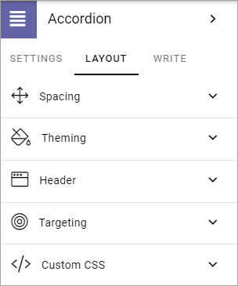
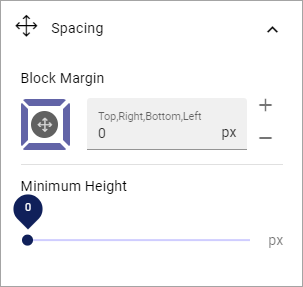
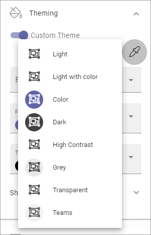
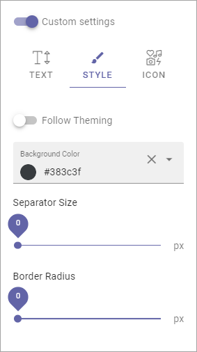
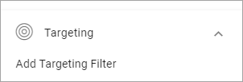
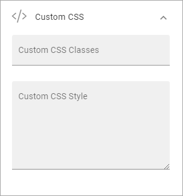

General Block Settings¶
The Layout tab contains settings that are general for most blocks, but scoped for each block.
Adding filters to a block, if it’s possible, works the same for most blocks. Find a general description of how to do that here: Filter UI
The Layout tab contain the following settings:
Spacing¶
Use this setting to add some space from the block’s border in to the content and set the minimum height for the block.
Theming¶
If you would like to set a custom style for this block, click “Custom Theme”, and these settings becomes available:

Background, Foreground and Text Color: Here you can set custom colors for this block.
Show Advanced Settings: Click here for some additional settings (see below).
To use another theme for the block, click the icon:

The available themes are listed, for example:
The themes are set up for the Business Profile in Omnia Admin, see: Theme
When you have chosen a theme you can edit colors for background, foreground and text, if needed. Note that the theme and colors you chose are shown in the block for a preview.
When you select Show Advanced Settings, the following settings becomes available:

You can try out these settings for various effects. You can see a preview in the block.
Header¶
The follwowing is available for header settings:

Anchor Name: You can set an anchor name for this block. When a block has an anchor name, you can link to the block, using a the Add Link block or using an Action Button.
Icon Type: If you would like an icon to be shown for the block, the first step is to select icon type. (If you don’t select an icon, Icon Type has no effect).
Icon: After having selected icon type, then select the icon.
Custom settings: For Header you can choose to use the global settings (set up in Omnia Admin) or use Custom Settings for this block.
Available custom settings for TEXT:

You can set these custom settings, for STYLE:
Follow Theming: Select this to follow the theming you selected under Theming. If you don’t you can select a custom background color.
The rest of the options should be self explanatory.
And these settings are available for ICON:
You can just try out different settings and see the effect in the block.
Targeting¶
A lot of blocks can be targeted to one or more groups using Targeting Properties.
To target a block, open the settings for the block and select “Add Targeting Filter”.
You set up targeting for a block, if available, the same way as in many other parts of Omnia. See this page for more information: Using Targeting
Custom CSS¶
For some blocks you can use Custom CSS settings. You then use this option:
